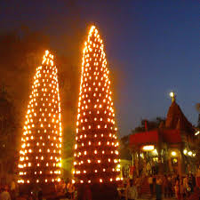

हरसिद्धिदेवी मंदिर

उज्जैन के प्राचीन और पवित्र उपासना स्थलों में श्री हरसिद्धिदेवी देवी के मंदिर का विशेष स्थान है।
स्कंद पुराण में वर्णन है कि शिवजी के कहने पर मां भगवती ने दुष्ट दानवों का वध किया था अत: तब से ही उनका नाम हरसिद्धि नाम से प्रसिद्ध हुआ।
शिवपुराण के अनुसार सती की कोहनी यहीं पर गिरी थी अतएव तांत्रिक ग्रंथों में इसे सिद्ध शक्तिपीठ की संज्ञा दी गई है।
यह देवी, सम्राट विक्रमादित्य की आराध्य कुलदेवी भी कही जाती है।
कहते हैं कि सम्राट विक्रमादित्य ने यहां पर घोर तपस्या की थी तथा लगातार 11 बार अपना सिर काटकर इन्हें समर्पित किया था
और ग्यारह बार सिर पुन: उनके शरीर से जुड़ गया था।
उपरोक्त तथ्यों के कारण इस मंदिर का अपना विशिष्ट महत्व है।

इस मंदिर के गर्भगृह में श्रीयंत्र प्रतिष्ठित है। ऊपर श्री अन्नपूर्णा तथा उनके आसन के नीचे कालिका, महालक्ष्मी तथा महासरस्वती आदि देवियों की प्रतिमाएं हैं।
रुद्रसागर तालाब के निकट इस मंदिर के परकोटे में चारों ओर द्वार हैं। इस मंदिर के प्रांगण में दो विशाल दीप स्तंभ हैं जिन पर नवरात्रि में दीपक जलाए जाते हैं।
इसके कोने पर एक अतिप्राचीन बावड़ी भी है। इस मंदिर के पीछे संतोषी माता एवं अगस्त्येश्वर महादेव का मंदिर है।
स्कंदपुराण में उल्लेख है कि इस मंदिर के दर्शन से अपार पुण्य प्राप्त होता है।